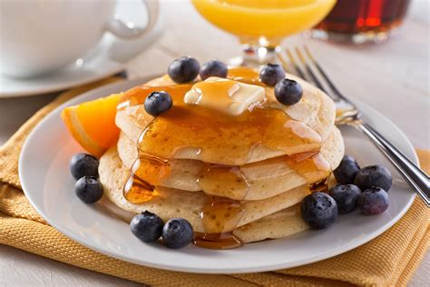

Pancakes

Description
You will enjoy this easy to follow recipe. This recipe serves 2-4 people. Total estimated prep
and cook time for this meal is aprox. 35 mins. You can choose to top your dish how best enjoyed.
Ingredients
- 1 cup of whole wheat flour
- 1 cup of whole milk
- 1 egg
- 2 tbsp of room tempurature butter
- 1/4 tsp of salt
- 1/4 tsp of baking soda
- 1/2 tsp of baking powder
- 2 tsp of granulated cane sugar
Steps
- Begin by mixing together all of the dry ingredients in a bowl.
- In a separate bowl whisk together the whole milk and egg until the mixture
is completely emulsified.
- Add the milk and egg mixture to the dry ingredients while stirring.
- Add butter to the mixture and you are ready to begin cooking!
Back